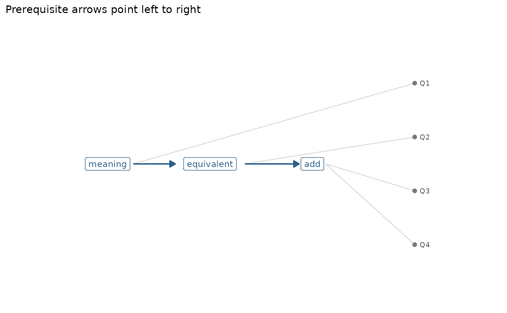

A knowledge graph describes what a test measures as a network: Concepts
(skills, attributes, learning objectives), the items that measure them,
and the relations between concepts. mv_kg_build() puts these pieces into
one mv_kg object that the other mv_kg_*() functions and gg_kg()
read. The graph is stored as two tibbles, one of nodes and one of edges,
so no graph package is needed.
Arguments
- concepts
the concepts: A character vector of names, or a data frame with a column
conceptand optional columnslabel(a longer name for plots) anddescription.- edges
optional relations between concepts: A data frame with columns
fromandtoand an optional columntype("prerequisite", the default, or"related") andweight.- items
optional item-to-concept links: Either a data frame in long form with columns
itemandconcept(one row per link, optionalweight), or a Q-matrix (a matrix or data frame of 0/1 with one row per item and one column per concept; item names come from the row names or a columnitem).- name
optional name of the graph, shown when it is printed.
Value
An object of class mv_kg: A list with nodes (a tibble with
node, kind ("concept" or "item"), label and description),
edges (a tibble with from, to, type and weight) and name.
Details
Three kinds of edges are used:
prerequisite: A directed edge between two concepts.frommust be learned beforeto(for example, equivalent fractions before adding fractions with unlike denominators). Prerequisite edges should form a directed acyclic graph;mv_kg_check()flags cycles.related: An undirected link between two concepts that are connected but where neither comes first.measures: A link from an item to a concept it measures. The items and their concepts are the rows of a Q-matrix.
See also
as_mv_kg() to build a graph from a Q-matrix, an edge list, a
fitted confirmatory mirt model or an igraph object; mv_kg_check() and
gg_kg(); the fractions_kg and fraction_subtraction_kg examples.
Examples
kg <- mv_kg_build(
concepts = c("meaning", "equivalent", "add"),
edges = data.frame(from = c("meaning", "equivalent"),
to = c("equivalent", "add")),
items = data.frame(item = c("Q1", "Q2", "Q3", "Q4"),
concept = c("meaning", "equivalent", "add", "add")))
kg
#> <mv_kg> 3 concept(s), 4 item(s)
#> Edges: 2 prerequisite, 0 related, 4 measures
#> Learning order (by prerequisite depth):
#> 0: meaning
#> 1: equivalent
#> 2: add
tidy(kg, "edges")
#> # A tibble: 6 × 4
#> from to type weight
#> <chr> <chr> <chr> <dbl>
#> 1 meaning equivalent prerequisite 1
#> 2 equivalent add prerequisite 1
#> 3 Q1 meaning measures 1
#> 4 Q2 equivalent measures 1
#> 5 Q3 add measures 1
#> 6 Q4 add measures 1
gg_kg(kg)
